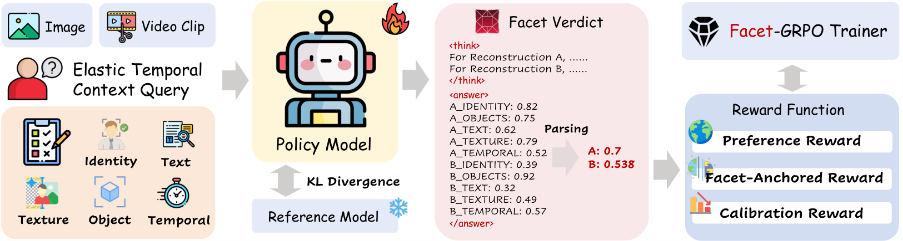
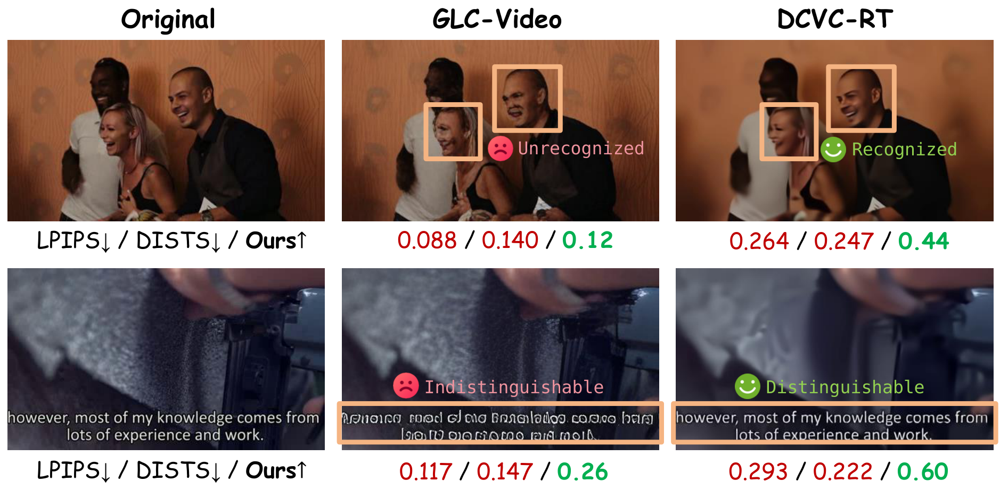
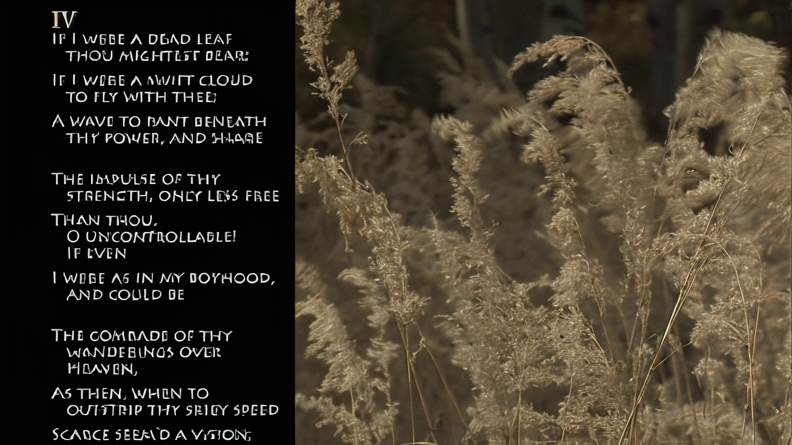
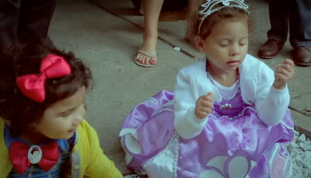
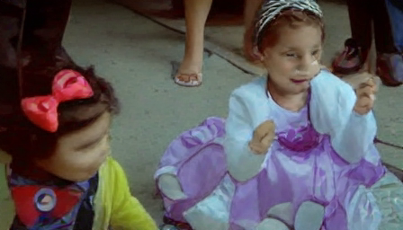
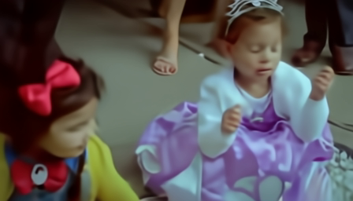

Identity
Does the person remain recognizably the same?
Source-conditioned visual quality assessment
1 School of Electronic and Computer Engineering, Peking University 2 School of Computer Science, Peking University 3 Pengcheng Laboratory

Video coding is advancing into the low and ultra-low bitrate regime, driven by end-to-end codecs that replace the hand-crafted pipeline with jointly optimized neural networks and generative codecs that exploit the priors of video generation models. Yet the dominant metrics, LPIPS and DISTS, measure feature and texture similarity rather than content fidelity: a reconstruction that hallucinates a wrong face or blurs text into convincing strokes can still score well, even when a human rejects it instantly. To address this, we propose CodecArena, the first vision-language framework for video coding quality assessment, casting codec evaluation as source-conditioned comparative reasoning between a reference and its reconstructions. We optimize CodecArena with Facet-GRPO, a visual reinforcement learning scheme that aligns pairwise codec preferences while grounding the verdict in five fidelity facets: identity, objects, text, texture, and temporal consistency. Its facet-anchored reward uses automatically derived facet directions as weak anchors, rather than human per-facet labels, to prevent any single sub-score from dominating the holistic preference and to yield interpretable fine-grained quality judgments. To support training and evaluation in this underexplored regime, we construct two complementary resources: CodecArena-1K, a fully automatic preference dataset of 1,500 comparison groups built from traditional, neural, and generative codec reconstructions with fused vision-language and objective supervision; and CodecArena-Bench, a human-ranked benchmark with source-disjoint videos for fair out-of-domain evaluation. Extensive experiments demonstrate that CodecArena achieves state-of-the-art agreement with human judgments on source-disjoint content across diverse codecs and bitrates, surpassing perceptual metrics and prior vision-language evaluators.
Part 1 · The problem
LPIPS and DISTS average feature distances over the whole frame. At low and ultra-low bitrates, that can reward globally realistic detail while missing the identity shift, unreadable text, fabricated texture, or temporal drift that makes a human reject the reconstruction.
The bias is self-reinforcing because many generative codecs are trained with LPIPS-style perceptual losses. Evaluating them with the same insensitive signal can reward a reconstruction for exploiting the metric rather than preserving the source. CodecArena instead compares the source with its reconstructions and asks what information remains faithful across five complementary facets.
A matched-rate failure case · ~0.15 bpp

Does the person remain recognizably the same?
Are scene entities preserved without invention or loss?
Do captions, signs, and logos stay legible and correct?
Is fine detail faithful rather than merely convincing?
Do identity and structure remain stable across frames?
Part 2 · Our method
Human rankings provide reliable holistic preferences, but they do not determine how a model should score identity, objects, text, texture, and temporal consistency separately. Facet-GRPO closes this gap with automatically derived facet directions, producing fine-grained judgments without human per-facet labels.
The failure mode
A holistic preference reward only constrains which side wins. Because the final quality is averaged over facets, the policy can inflate one salient score—often synthesized texture—while a face or caption is corrupted. The ranking may be correct even though the explanation and sub-scores are not.
Why group-relative optimization
GRPO learns from the relative quality of several sampled verdicts for the same query. It removes the explicit critic used by PPO, reducing compute overhead and avoiding instability from a learned value function, while a frozen reference model and KL term keep policy updates controlled.
Bradley–Terry latent qualities reward the correct A/B choice in proportion to preference confidence.
Constrains the orderingSide-level scores are matched to fused objective quality, so confidence has a meaningful magnitude.
Constrains the scaleEvery clearly separated facet must follow its automatically derived direction; no one sub-score can carry the comparison.
Constrains the decompositionExplicit visual reasoning precedes a parseable verdict, preventing collapse into unsupported score-only outputs.
Constrains the evidenceElastic temporal context
Training samples K ∈ {1, 3, 5, 7}. At K=1, the temporal facet is marked not scorable and removed from the anchor set; at K>1, all five facets apply. The same policy therefore handles image and video assessment and is evaluated at K=14 to test temporal extrapolation beyond the training context.
With λf=0.6, facet anchoring improves the decisive face/text judgment as well as the final preference. This directly tests the failure mode that holistic rewards leave under-determined.
Fully automatic training labels
Kimi-K2.6 and Opus-4.7 pairwise judgments are fused with seven objective signals and a within-codec rate-monotonicity constraint. Human rankings are reserved for CodecArena-Bench evaluation.
Re-encode natural clips with HEVC, VVC, DCVC-DC, DCVC-RT, and GLC-Video across medium-low to ultra-low bitrates.
Fuse pairwise VLM judgments with face identity, perceptual, text, no-reference, and temporal quality signals.
Aggregate rankings from coding experts and non-domain viewers on source-disjoint content for out-of-domain evaluation.
Part 3 · Key findings
Both CodecArena variants occupy the top SRCC positions at every temporal granularity and rank first and second in pairwise accuracy. The Qwen3-VL-8B judge remains strong at K=14 despite training only with K≤7.
Pairwise examples
Each Test-2 example shows a reference and a randomly ordered A/B pair. The tables report every score used for the comparison and the reconstruction selected by each evaluator; ↑ / ↓ indicates whether higher or lower is better.
| Evaluator | A | B | Choice |
|---|---|---|---|
| Human mean rank ↓ | 6.6 | 3.0 | B · aligned |
| CodecArena ↑ | 0.20 | 0.53 | B · aligned |
| LPIPS ↓ | 0.2264 | 0.3595 | A · not aligned |
| DISTS ↓ | 0.1508 | 0.2421 | A · not aligned |
| Q-Insight ↑ | 3.37 | 2.80 | A · not aligned |
A appears locally detailed but changes the subject's face. LPIPS, DISTS, and Q-Insight favor A; human ranking and CodecArena choose the more identity-faithful B.

| Evaluator | A | B | Choice |
|---|---|---|---|
| Human mean rank ↓ | 4.0 | 7.1 | A · aligned |
| CodecArena ↑ | 0.62 | 0.50 | A · aligned |
| LPIPS ↓ | 0.2867 | 0.1318 | B · not aligned |
| DISTS ↓ | 0.1778 | 0.0991 | B · not aligned |
| VQ-Insight ↑ | 66 | 68 | B · not aligned |
B preserves a plausible scene appearance but corrupts the poem into malformed characters. LPIPS, DISTS, and VQ-Insight favor B; human ranking and CodecArena choose A's readable text.



| Evaluator | A | B | Choice |
|---|---|---|---|
| Human mean rank ↓ | 6.8 | 3.1 | B · aligned |
| CodecArena ↑ | 0.34 | 0.64 | B · aligned |
| LPIPS ↓ | 0.1234 | 0.1392 | A · not aligned |
| DISTS ↓ | 0.1212 | 0.1443 | A · not aligned |
| VQ-Insight ↑ | 62 | 56 | A · not aligned |
A looks sharper in isolation but changes the child's facial state. LPIPS, DISTS, and VQ-Insight favor A; human ranking and CodecArena prefer B's closer source fidelity.
Resources
Paper, implementation, and model/data resources are collected below. The model/data link currently returns to the project page and can be replaced when its final destination is ready.
BibTeX
Neutral project citation placeholder
@article{fu2026codecarena,
title={CodecArena: Codec Quality Assessment via Visual Reinforcement Learning},
author={Fu, Jiaye and Li, Weiqi and Gao, Qiankun and Zhao, Yanchen and Meng, Xiandong and Zhang, Jian and Ma, Siwei and Zhang, Jiaqi},
year={2026}
}